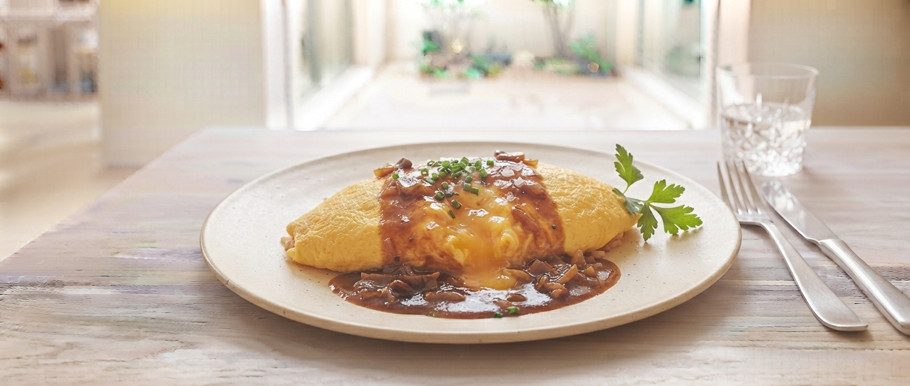
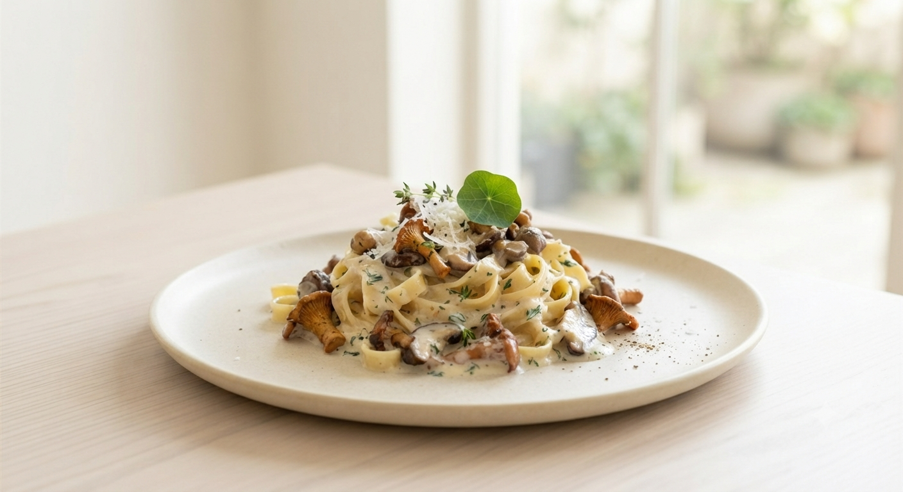
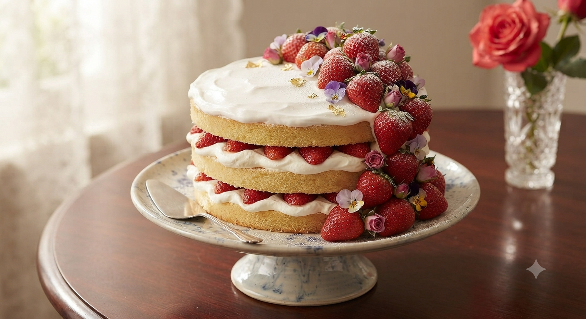

Google クチコミ
「こんなサービスがあったらいいな」のお声にお応えして、現在新たな企画を準備しております。順次スタート予定です。
山形の豊かな四季（春の山菜、夏のさくらんぼ・夏野菜、秋のきのこ・フルーツ等）を味わい尽くす月替わり限定コース。
近日スタート予定「いるくおーれ」自家製パスタソースと生パスタをご自宅にお届け。温めて和えるだけでプロの味が再現できます。
準備リリース予定小上がり席を完備。お子様と一緒にお席でゆっくりお召し上がりいただけます。
デザートも10種類から選択可能。特別な日のメッセージプレートも承ります。
県産の野菜やきのこを積極的に使い、季節の恵みをそのまま食卓へお届けします。


ACCESS